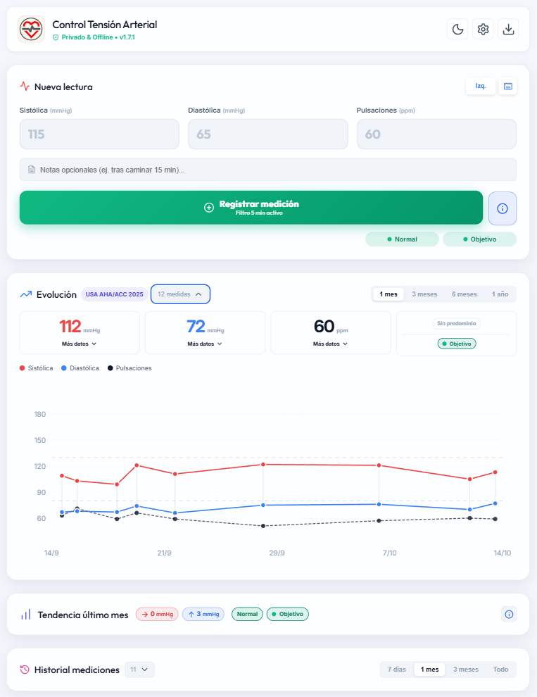

01 · La opción sencilla
Individual offline
Para una persona que quiere empezar sin cuentas, sin servidor y sin conexión.
- Los datos permanecen en el dispositivo
- Aplicación Android y PWA instalable
- Historial, gráficas, estadísticas e informes
- Copias completas y exportación PDF/CSV
Las mediciones se guardan únicamente en el navegador. Crea una copia para cambiar de dispositivo.
